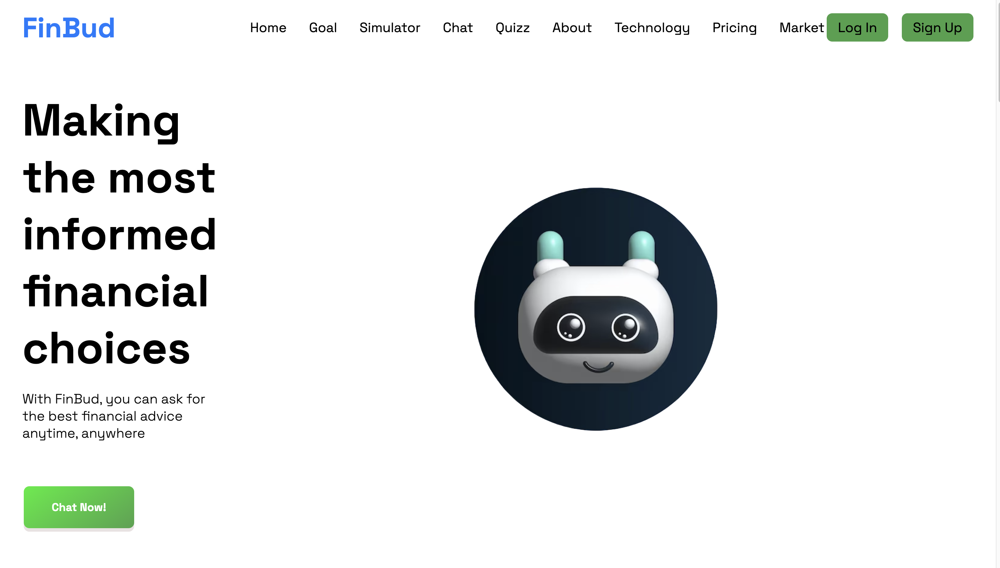
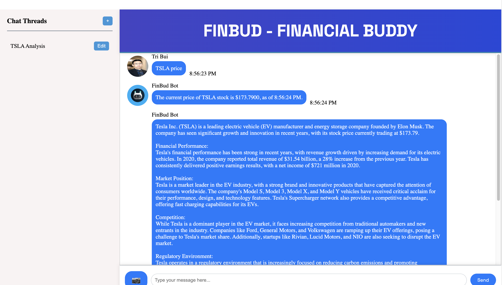
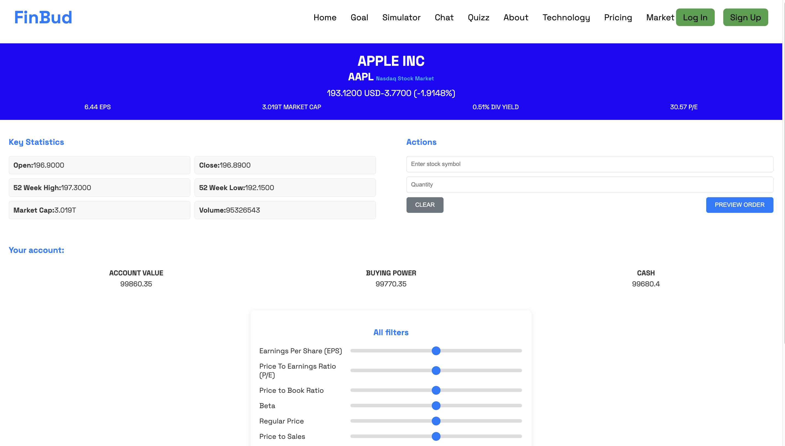

FinBud
I led a team in developing FinBud, a full-stack financial advisory web application using the MERN stack. I designed a robust database system that enhanced data retrieval speed by 30% and ensured secure storage. By integrating the OpenAI API, I implemented a financial advisory chatbot that increased user engagement by 25%. I also oversaw the deployment strategy on Netlify, achieving a 99.9% uptime and improving user experience.
Tech Stack: MongoDB, Express.js, React, Node.js, OpenAI API, Netlify.
App Demo:
   LinkVM252 Debugger
I led a team of 3 in developing the VM252 Debugger, a Java Swing application with features like breakpoints, memory display, and dynamic state updates. I created a comprehensive debugger for VM252 assembly language with a responsive GUI. By implementing MVC architecture and utilizing OOP principles, I enabled real-time updates of machine states, significantly enhancing debugging efficiency.
Tech stack: Java, Java Swing.
App Demo:
 Github Link
Github Link
Eco Travel Farm
Developed during UIowaHack 2023, this web application connects farmers across the US, providing a seamless and visually appealing user experience. Implemented robust user authentication with Auth0 and used Redux for state management, ensuring performance, scalability, and data security.
Tech stack: NextJS, TypeScript, tRPC, Prisma, Tailwind CSS.
App Demo:
 Github Link
Github Link
Astronomy Flashcards
A fun web application allows users to gain some knowledge about the astronomy, with detailed explanation.
Tech Stack: JavaScript, React, HTML/CSS, Tailwind CSS.
App Demo:
 Github Link
Github Link